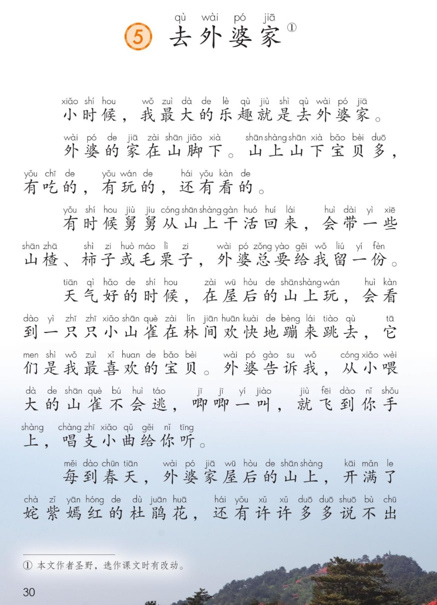
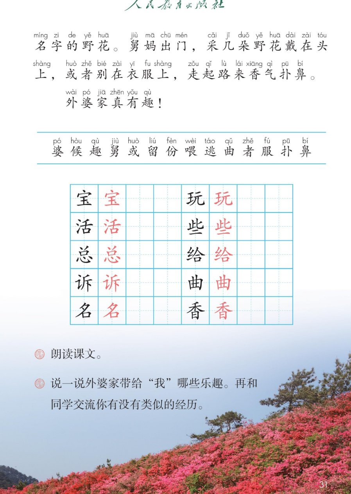

×
🔊 手机听不到声音怎么办？
① 先把手机
媒体音量调大 ，确认没开静音、没连蓝牙耳机；在微信里打开的，点右上角「⋯ → 用浏览器打开」。
② 还是没声音？到应用商店免费下载
Microsoft Edge 浏览器 （它自带朗读发声），用它打开本页面就能出声。
③ 换了 Edge 仍然没声音，说明这部手机的
硬件/系统不支持 网页朗读（多为老旧机型）；近几年买的新手机一般都能正常播放。
→ 打开声音自检
🏡 第 5 课《去外婆家》· 有声图文带读
统编版语文 · 第三单元·阅读 · 课本 P30~31
课文 6 个自然段
会认字 14
会写字 10
听写词 8
近义词 4 组
深入理解 8 题
本课本领 分角色朗读
🎧 五步学（可随时点任意一句、一个字、一个词单独听）： ① 听读课文 ——一句一句读，读到哪一句哪一句发光；开「跟读」后读完一句留时间让你自己读。② 学字词 ——14 个会认字、10 个会写字（含书写提示），点一个读一个。③ 词语·听写·造句 ——听写 8 个词（读两遍→你写→报答案→听示范句），再听 4 组近义词辨析。④ 深入理解 ——8 道题（认知 / 理解 / 运用 / 拓展），开放题答案不唯一，先想后看。⑤ 讲一讲·分角色 ——先讲外婆家的乐趣，再分角色朗读课文。
点段前的 ①②③④⑤⑥ 听整段
🔁 跟读模式：关
👁 隐藏注音（自测用）
注音只标本课要认、要写的字，读音来自课本第 31 页生字表
🎤 朗读要求（老师标准） 不添字、不漏字、不回读 ；亲切 ，像在叫家里人；一样一样 说清楚，中间稍停；像鸟叫 ，短而轻快；响、高兴 。
① 小时候，我最大的乐趣qù 就是去外婆pó 家。
② 外婆pó 的家在山脚下。 山上山下宝bǎo 贝多，有吃的，有玩wán 的，还有看的。
③ 有时候舅jiù 舅jiu 从山上干活huó 回来，会带一些xiē 山楂、柿子或huò 毛栗子，外婆pó 总zǒng 要给gěi 我留liú 一份fèn 。
④ 天气好的时候hou ，在屋后的山上玩wán ，会看到一只只小山雀在林间欢快地蹦来跳去，它们是我最喜欢的宝bǎo 贝。 外婆pó 告诉su 我，从小喂wèi 大的山雀不会逃táo ，唧唧一叫，就飞到你手上，唱支小曲qǔ 给gěi 你听。
⑤ 每到春天，外婆pó 家屋后的山上，开满了姹紫嫣红的杜鹃花，还有许许多多说不出名míng 字的野花。 舅jiù 妈出门，采几朵野花戴在头上，或huò 者zhě 别在衣服fú 上，走起路来香xiāng 气扑pū 鼻bí 。
⑥ 外婆pó 家真有趣qù ！
🤔 想一想（点我可跳过）
点图听这一页在讲什么

第 30 页 · 课文前半

第 31 页 · 课文结尾与生字
📖 人教版《语文》二年级上册 · 课本第 30~31 页 · 图片仅供个人学习，版权归人民教育出版社所有
点一个字，听读音、词语和课文里的句子
结构、部首、笔画与书写提示为通用规范，供参考，以教材和老师的指导为准
宝
bǎo
宝贝 · 宝石
8 画 · 上下（宀）
宝盖要宽，玉字写小
玩
wán
有玩的 · 玩具
8 画 · 左右（王）
左窄右宽，王旁末横变提
活
huó
干活 · 生活
9 画 · 左右（氵）
左窄右宽，右边舌竖要直
些
xiē
一些 · 这些
8 画 · 上下（止）
上面写紧凑，末横要长
总
zǒng
总要 · 总是
9 画 · 上下（心）
上点要正，心字底要宽
给
gěi
给我 · 送给
9 画 · 左右（纟）
左窄右宽，右边合要匀
诉
sù
告诉 · 诉说
7 画 · 左右（讠）
左窄右宽，右边斤竖要长
曲
qǔ
小曲 · 歌曲
6 画 · 独体
两竖要直，几横要匀
名
míng
名字 · 有名
6 画 · 上下（口）
上夕要窄，下口要正
香
xiāng
香气 · 花香
9 画 · 上下（禾）
上禾要窄，下日要正
本课课后没有“读一读，记一记”，这里换成会写字的组词
宝 宝贝 宝石 国宝
活 干活 生活 快活
名 名字 有名 姓名
读两遍 → 你在纸上写 → 报答案 → 听示范句
准备听写 · 共 8 个词
○ ○ ○
点下面的「开始听写」，听到一个词就写一个词。
▶ 开始听写
🔁 再读一遍
👁 看答案
点词听读，点句子听示范句，再自己说一句
1 宝贝 会写字
示范句：山上山下宝贝多。
✏️ 我也能说：什么是我的宝贝。比如：这本图画书是我的宝贝。
2 好玩 会写字
示范句：外婆家的山上真好玩。
✏️ 我也能说：什么地方真好玩。比如：屋后的小河边真好玩。
3 干活 会写字
示范句：舅舅从山上干活回来。
✏️ 我也能说：谁在哪里干活。比如：爷爷在田里干活。
4 一些 会写字
示范句：会带一些山楂、柿子或毛栗子。
✏️ 我也能说：一些什么。比如：我买了一些苹果。
5 总要 会写字
示范句：外婆总要给我留一份。
✏️ 我也能说：谁总要做什么。比如：妈妈总要送我上学。
6 告诉 会写字
示范句：外婆告诉我，从小喂大的山雀不会逃。
✏️ 我也能说：谁把什么告诉谁。比如：我把好消息告诉了好朋友。
7 名字 会写字
示范句：还有许许多多说不出名字的野花。
✏️ 我也能说：什么的名字。比如：这朵花的名字叫杜鹃。
8 香气 会写字
示范句：走起路来香气扑鼻。
✏️ 我也能说：什么地方有什么香气。比如：院子里有一股桂花的香气。
相同点 / 不一样在哪 / 各造一句
乐趣 — 快乐
相同：都表示高兴、有意思 。
不一样：乐趣 是名词，指让人觉得有意思的那件事，可以说“最大的乐趣”；快乐 说的是心情，可以说“我很快乐”。
乐趣：我最大的乐趣就是去外婆家。
欢快 — 欢乐
相同：都是高兴、快活 。
不一样：欢快 多形容动作轻快，比如“欢快地蹦来跳去”；欢乐 多形容场面热闹，比如“欢乐的节日”。
欢快：小山雀在林间欢快地蹦来跳去。
喜欢 — 喜爱
相同：都是心里中意 。
不一样：喜欢 最常用，说话、写话都能用；喜爱 更书面一点，常说“喜爱的宝贝”。
喜欢：它们是我最喜欢的宝贝。
或者 — 或是
相同：都是“也可以这样” 的意思。
不一样：或者 最常用，前后可以接短语；或是 读起来短一点，多连着说。
或者：会带一些山楂、柿子或毛栗子。
山上的宝贝 山楂 柿子 毛栗子 杜鹃花 野花
有…的 有吃的 有玩的 还有看的
姹紫嫣红 姹紫嫣红 五颜六色 万紫千红
一家人的称呼 外婆 舅舅 舅妈
叠词说数量 一只只 许许多多 唧唧
标「答案不唯一」的题，说得有道理都对
认知 外婆的家在哪里？山上山下都有什么？看解析
🤔 想一想
解析：
位置：山脚下 。
宝贝：有吃的 （山楂、柿子、毛栗子），有玩的 （小山雀），还有看的 （杜鹃花、野花）。
课文用一句“山上山下宝贝多”先总说，再一样一样分说。
💡 先总说、再分说，是写景写物最常用的一种办法
认知 舅舅从山上干活回来，会带哪些东西？看解析
🤔 想一想
解析：
三样东西：山楂、柿子、毛栗子 。
注意“或”字——不是三样都有，是其中一样或几样。
“外婆总要给我留一份”，一个“总”字，说明每次都留。
💡 “总”字一读，外婆疼我的心意就出来了
理解 说一说外婆家带给“我”哪些乐趣。再和同学交流你有没有类似的经历。看解析
🤔 想一想
解析：
吃的 ：山楂、柿子、毛栗子，外婆总留一份。
玩的 ：小山雀是我最喜欢的宝贝，还会唱小曲给我听。
看的 ：杜鹃花开满山，野花说不出名字，香气扑鼻。
再加上自己类似的经历 ：比如爷爷家的果园、奶奶家的小狗。
🌈 答案不唯一，说清“三样乐趣 + 自己的经历”就好
理解 为什么“从小喂大”的山雀就不会逃？看解析
🤔 想一想
解析：
吃惯了 ：从小喂大，不愁吃的，不用飞走找食。
不怕人 ：天天见面，把人当成亲人。
“唧唧一叫就飞到你手上”——这一句把“亲”写出来了。
🌈 答案不唯一，能说出“喂惯了、不怕人”就对
理解 “姹紫嫣红”是什么意思？从课文哪儿能看出来？看解析
🤔 想一想
解析：
意思是：花开得颜色多、又鲜又好看 。
课文里写：山上“开满了”杜鹃花，还有“许许多多”说不出名字的野花——花多、颜色多，就是姹紫嫣红。
姹和嫣都是女字旁，本来是说女子好看的，这里借来说花好看。
🌈 答案不唯一，说出“花多、颜色多”就懂了
运用 照样子说一句：有吃的，有玩的，还有看的。看解析
🤔 想一想
解析：
商店里有穿的 ，有用的 ，还有玩的 。
果园里有红的 ，有黄的 ，还有紫的 。
书包里有书 ，有本子 ，还有铅笔盒 。
🌈 答案不唯一，三样东西一样一样说出来就好
运用 用“或者”说一句话。看解析
🤔 想一想
解析：
晚上我可以看书，或者 画画。
明天我们去公园，或者 去图书馆。
渴了就喝水，或者 喝一点汤。
🌈 答案不唯一，前后两样选一样就对
拓展 你有没有一个像外婆家一样有趣的地方？说一说那里有什么乐趣。看解析
🤔 想一想
解析：
先说是哪里 ：奶奶家、姥姥家、乡下的小院。
再说有什么 ：一棵树、一群鸡、一条小河。
最后说乐趣在哪 ：打枣、喂鸡、捉小鱼。
🌈 答案不唯一，说清“地方 + 有什么 + 乐趣在哪”就是完整的一段话
点一张卡，听这一步，再连起来讲一遍
💬 讲故事支架：先 说最大的乐趣是去外婆家 → 再 说外婆家在山脚下、宝贝多 → 接着 说吃的（山楂柿子毛栗子）→ 然后 说玩的（小山雀）→ 最后 说看的（杜鹃花），一句“外婆家真有趣”收尾。
三个人各说一样乐趣，旁白读开头和结尾
👧 我 · 说吃的
“有时候舅舅从山上干活回来，会带一些山楂、柿子或毛栗子，外婆总要给我留一份。”
💬 要读出数东西的耐心 和外婆疼我的暖意
👧 我 · 说玩的
“天气好的时候，在屋后的山上玩，会看到一只只小山雀在林间欢快地蹦来跳去，它们是我最喜欢的宝贝。”
💬 要读出轻快、喜欢 的语气，“唧唧”读得像鸟叫
👧 我 · 说看的
“每到春天，外婆家屋后的山上，开满了姹紫嫣红的杜鹃花，还有许许多多说不出名字的野花。”
💬 要读出又美又惊喜 的感觉，“姹紫嫣红”读得慢一点
📖 旁白
“小时候，我最大的乐趣就是去外婆家。”
💬 开头读得平稳亲切 ，最后一句读得响、高兴
💬 分角色小提示：课文里“宝贝多，有吃的，有玩的，还有看的”是一句总说。分角色时可以让三个人各说一样 ——第一位说吃的，第二位说玩的，第三位说看的，旁白读开头和结尾。最后一句“外婆家真有趣！”四个人一起读 。